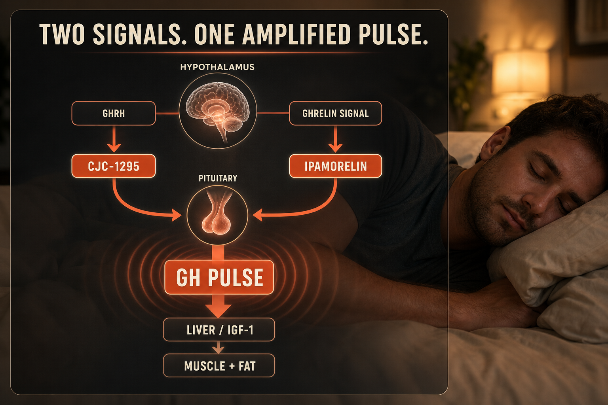

What CJC-1295 + Ipamorelin Is
CJC-1295 No-DAC (Modified GRF 1-29) is a synthetic GHRH analog with ~30-minute half-life that binds pituitary GHRH receptors and triggers a sharp, pulsatile GH release closely mimicking natural rhythms.
Ipamorelin is a selective GHSR (ghrelin receptor) agonist. Its key advantage over GHRP-2 and GHRP-6 is selectivity - it raises GH without meaningfully elevating cortisol, prolactin, or appetite.
Combined, they activate two separate receptor pathways producing synergistic GH release significantly larger than either alone. The combined pulse closely resembles natural deep-sleep GH release, amplified and timed to the injection schedule. Both require cycling due to documented pituitary receptor sensitivity reduction with continuous use.
Plain English Version
The Orchestra and the Amplifier
Your pituitary releases growth hormone in natural pulses - biggest ones during deep sleep, triggered by two internal signals. One signal (GHRH) tells the pituitary it's time. A second signal (ghrelin) amplifies and says release more.
By your 40s these signals have weakened. The orchestra plays at half volume with missed cues. CJC-1295 restores the conductor's timing signal. Ipamorelin turns up the amplifier. Together they reactivate two separate systems designed to work in coordination.
The combination is more effective than either alone not because you get twice as much of one thing - but because you are restoring two pathways that were built to work together.
One sentence: CJC-1295 and Ipamorelin target two different GH release systems that produce far more growth hormone together than either does alone.
How To Picture It

How It Works
CJC-1295 No-DAC binds anterior pituitary GHRH receptors producing short pulsatile GH release. Ipamorelin binds GHSR receptors amplifying GH through the ghrelin-mimetic pathway without cortisol or prolactin elevation. Together they produce synergistic GH → IGF-1 → muscle protein synthesis, fat metabolism, sleep quality, and tissue repair.
Documented Benefits
primary measured effect
lean mass increase and fat reduction
Dosing Protocol
| Phase | Dose (each) | Frequency | Timing |
|---|---|---|---|
| Starting | 100mcg each | Once daily | Bedtime fasted |
| Standard | 200mcg each | Once or twice daily | Bedtime or bedtime + morning fasted |
| Advanced | 300mcg each | Twice daily | Both fasted |
Fasting is critical - food blunts GH release. Inject 2 hours after eating, wait 30 min before eating again. Mandatory cycling: 8-12 weeks on, 4 weeks off.
Reconstitution Standard
Pre-blended CP vial (5mg CJC + 5mg Ipa) + 2ml BAC = 2,500mcg/ml each
| Dose each | Units | Volume |
|---|---|---|
| 100mcg | 4u | 0.04ml |
| 200mcg | 8u | 0.08ml |
| 300mcg | 12u | 0.12ml |
Dosage Build-Up Timeline
- Week 1-2: 100mcg each bedtime - tolerance
- Week 3-6: 200mcg each bedtime - standard
- Week 7-12: 200mcg twice daily if desired
- Week 13-16: Mandatory 4-week off cycle
- Repeat
Common Mistakes
blunts GH release
pituitary desensitization is real and documented
DAC produces continuous not pulsatile stimulation; pairs poorly with Ipamorelin
missing natural GH pulse timing
potential supraphysiological levels
Contraindications And Cautions
GH/IGF-1 elevation risk
GH affects insulin sensitivity
GH axis interference
WADA prohibited
What To Track
- Body composition monthly
- Sleep quality 1-10 weekly
- Recovery time post-exercise
- IGF-1 bloodwork at baseline and 8-12 week mark
- Morning grogginess (first 2 weeks - typically resolves)
- Water retention and joint tenderness at higher doses
Stacks Well With
- BPC-157 or KLOW - tissue repair alongside GH support
- Retatrutide or semaglutide - metabolic plus body composition
- NAD+ - energy complements GH-driven protein synthesis
Sources
- PeakedLabs. CJC-1295 Ipamorelin Stack 2026. peakedlabs.com
- PeptideDosingProtocols. CJC+Ipa GH Pulse Stack 2026. peptidedosingprotocols.com
- ThePeptideCatalog. CJC-1295 Ipamorelin guide. thepeptidecatalog.com
- Clark RG. Ipamorelin: first selective GH secretagogue. European Journal of Endocrinology. pubmed.ncbi.nlm.nih.gov
- Teichman SL. Prolonged CJC-1295 GH stimulation. Journal Clinical Endocrinology Metabolism. pubmed.ncbi.nlm.nih.gov
For educational and research documentation purposes only. Not medical advice. Always speak with a qualified healthcare professional before making health decisions.